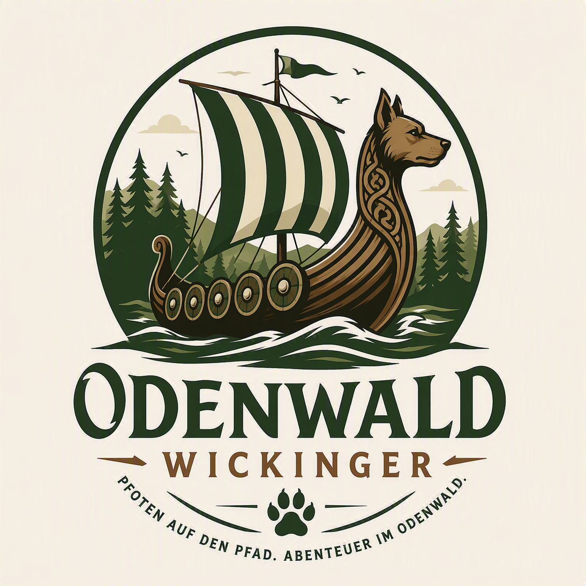

Bei unseren Touren geht es nicht um Leistung oder Tempo.
Wir genießen die Natur, lernen neue Menschen kennen
und schaffen Erinnerungen, die lange bleiben.
Jede Wanderung ist ein kleines Abenteuer.

Gemeinsam mit unseren Hunden erkunden wir die schönsten Wege des Odenwaldes. Wälder, Burgruinen, Aussichtspunkte und verborgene Pfade warten darauf entdeckt zu werden.
Die Odenwaldwickinger stehen für Natur, Gemeinschaft und gemeinsame Erlebnisse mit unseren Vierbeinern.
Die schönsten Ecken des Odenwaldes entdecken.
Menschen und Hunde mit derselben Leidenschaft.
Neue Wege, neue Begegnungen und tolle Erinnerungen.


📧 kontakt@odenwaldwickinger.de
📱 0151 123456789